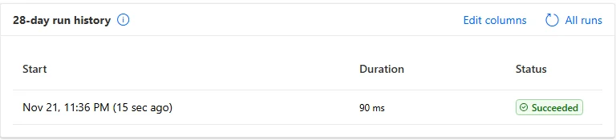
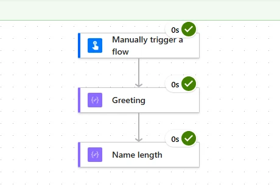

- Power Automate
- Level 1 · Foundations · 7 of 7
Run history and basic debugging
Every time a flow runs, Power Automate records what each step received and returned. That record is your main debugging tool. Most problems are solved by opening the run and reading the inputs of the first step that went wrong.
Find the run

Older runs are removed after 28 days. If you need a longer audit trail, write key results to a log list or table yourself.
Read the run

- Start at the top and find the first red card. Later failures are usually just knock-on effects.
- Select it and read Inputs: they show the exact values the step received after all expressions were worked out.
- Read the error message under Outputs. It normally names the field or type that was wrong.
- Fix the step in the designer, then use Resubmit to rerun with the same trigger data.
Tip: add a temporary Compose before a failing step and put the value you suspect in it. The run shows you exactly what that value was.
Errors you will meet first
| Message contains | Usually means |
|---|---|
InvalidTemplate | An expression failed: wrong type, missing field, or a function given null |
cannot be evaluated because property ... doesn't exist | Use ?['field'] instead of ['field'], or check the field name |
Unauthorized / 401 / 403 | The connection lacks permission or needs to be signed in again |
429 / throttled | Too many requests; the action retries on its own, so check retry settings before changing logic |
New to this? Start from the basics optional
Run: one execution of the flow. Statuses are Succeeded, Failed, Cancelled and Running.
Inputs and Outputs: what a step received and what it returned. Show raw inputs displays the full JSON.
Resubmit: runs the flow again with the same trigger data, after you have fixed it.
Build it step by step optional
- Open your first flow and change the Name length expression to
length(triggerBody()['missing'])(no question mark, wrong field). - Save and test. The run fails.
- Open the run from the 28-day run history and select the red card. Read the error: the property does not exist.
- Correct the expression back to
length(triggerBody()?['text'])and save. - Return to the failed run and select Resubmit. The new run succeeds.
Common mistakes
- Fixing the last red step instead of the first one.
- Rebuilding the flow when only a connection expired. Check the connection first.
- Leaving debug Compose actions with sensitive data in production. Remove them, or turn on Secure inputs/outputs in the action's settings.